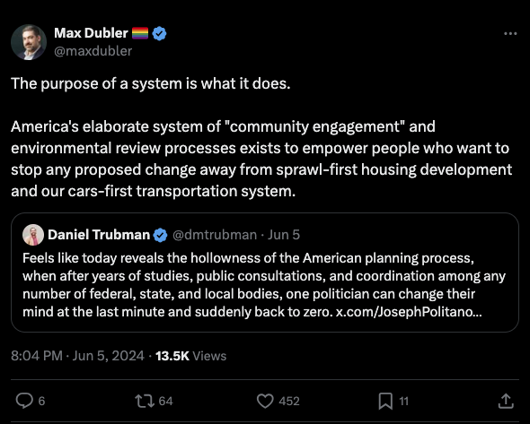

Is the point of a system what it does?
In recent years I have noticed an increase in the number of people online and in some serious academic settings advancing some version of the claim that “the point of a system is what it does.” This is an idea from a field known as systems thinking, but applied to politics, it is usually intended to convey a point similar to the following: Dysfunctional institutions or policies which consistently produce subpar results as measured by some metric should be considered, for the tactical advancement of some practical purpose, as designed to produce those subpar results. Below is a tweet from a housing policy analyst discussing housing policy as such a dysfunction system in the US:

I have seen this phrase deployed against many US institutions, most notably the criminal justice system, the US senate, or even, most grandiosely, capitalism itself.
My best understanding of why someone might want to advance this type of claim is that it builds support for an outright overhaul of a system by making it seem that the system is ill-designed in its essence. One component of this is intimating that a certain group of actors benefit from the dysfunction of the institution, and therefore its dysfunction is not really dysfunction at all, but an intended effect. If potential reform coalition allies believe that a system is not, in its purpose, designed to produce bad outcomes, then they may also hesitate before committing to system change and instead prefer incremental reforms. I somewhat doubt that this rhetorical approach is empirically effective at converting people to a reform cause (and of course there is the normative question of whether a given cause is a good one), but that is not the main point of this post. Instead, I want to take the claim seriously for a second and discuss why it does not make any analytical sense. This also affords an opportunity for a somewhat deeper discussion of the relationship between geneaology and teleology in institutions.
I want to make five arguments. First, and most obviously, policies, systems, and institutions can and frequently do have unintended consequences. Institutional designers such as the drafters of the US Constitution may envision a certain function for an institution, only to discover that it has quite different effects in practice. Sometimes, this transmogrification can occur quite quickly, as happened with the Electoral College. Inasmuch as an institution’s original intended design confers onto it a telos (an idea I contest below), this telos can be betrayed by the unforeseen secondary effects of that institution! A justice system designed to fairly and expeditiously mete out justice that ends up having the unintended effects of delaying and distorting justice is not functioning according to its “point.” Just because some groups may benefit from these unforeseen consequences does not imply that these consequences were intended, or even that the benefitting group is involved in a volitional way at all. They may simply passively receive benefits from the unintended consequences.
Second, and more abstractly, it is not clear that a system or an institution is really something that has a “point” at all. A “point” here might mean an intended strategic or normative effect. A discrete policy may have a point, at least in the short window after it is passed. A simple bill to legalize marijuana recently passed by a state legislature has a point–to legalize marijuana. But does a system have a point? Systems are complex networks of interrelated actors, policies, institutions, and flows of resources and ideas between and within all of the nodes. The effects on various groups that emerge from that system can be heterogeneous and change over time. It seems like a category error to me to ascribe a single “point” to a system at all. Put differently, it’s not clear that an institution has a telos, and even if so, this telos likely does not come entirely from the original design of the institution. Believing that the genealogy of an institution is equivalent to its teleology seems like a weird thing for people on the left to believe, given its similarity to textualism/originalism, which we know is largely bunk and a smokescreen for ideological preferences.
Third, institutions can have different effects depending on the actor interacting with that institution. Some political groups may depend crucially on an institution for resources, whereas other groups would be better off abolishing it altogether. Therefore, a system does not typically have a single, identifiable answer to “what it does.” This is increasingly true as the system gets more complex, older, and more important. What does the US Senate do? Well, it passes laws, empowers individual politicians and their networks, overrepresents constituents from small states, blocks legislative reform with its filibuster rules, etc. At different times and to different people, one or more of these effects can be relevant or irrelevant, salutary or harmful. Whenever we boil down a system to a single effect to highlight “what it does,” this is a strategic and intentional misrepresentation. Whether or not that misrepresentation is worthwhile depends on whether such a rhetorical move results in a good outcome. But it is not usually a faithful and clearsighted analysis of politics. If the idea is to emphasize a particular problem with a system or institution, and to argue that this problem outweighs any of the other effects of that institution, then I don’t see why someone couldn’t just say that.
Fourth, and relatedly, scholars of institutions note that actors within institutions are constantly in struggle over institutional rules. Institutions are never static. Politics occurs both within them as members vie for power with each other, and without them as those outside the institution either seek to enter it, reform it, or abolish it. As the balance of power between these groups changes, the institution’s effects can change, even if the formal rules do not. (See the work of Streeck and Thelen, as well as Jacob Hacker.) And, sometimes, the formal rules do in fact change! The “point of a system” varies over time. Even for an individual discrete policy, the “point” may exist in the short window after policy passage, but once it becomes law, it can immediately create new politics. Political scientists refer to this as “policy feedback” since a policy passed at time \(t\) affect politics at time \(t+1\). Perhaps a policy empowers a new group of actors by transferring resources to them or by encouraging their political mobilization. This group then uses their newfound influence to pass other policies. In a way, the original policy has had the “point”—intended or not—of furthering the later policies passed by the newly empowered group. Incidentally, this is exactly what happened with Social Security in the US, which empowered and mobilized seniors, profoundly shaping politics in other domains, not just retirement and pensions. Policies in one domain can also be used, both politically and in court, to obliquely justify other actions or decisions. Any lawyer knows that precedents can evolve in interesting ways, in part because, as this understanding of institutions would predict, attorneys are incentivized to search far and wide for any type of case law that might be relevant for their client’s case. Even if a decision were arrived at in a totally different context, it can still end up being used down the line for creating new rules and shaping the distribution of power. In this way, the “point” of even something relatively self-contained as an individual policy or court case can contingently evolve and mutate as politics progresses.
Finally, I think this way of thinking ignores negative equilibria as a feature of social and political life. Sometimes, we are all worse off despite us following our individual incentives. Just because the system is broken, doesn’t mean someone prefers it that way. We can all prefer to live in a better world, but lack the means of getting there.